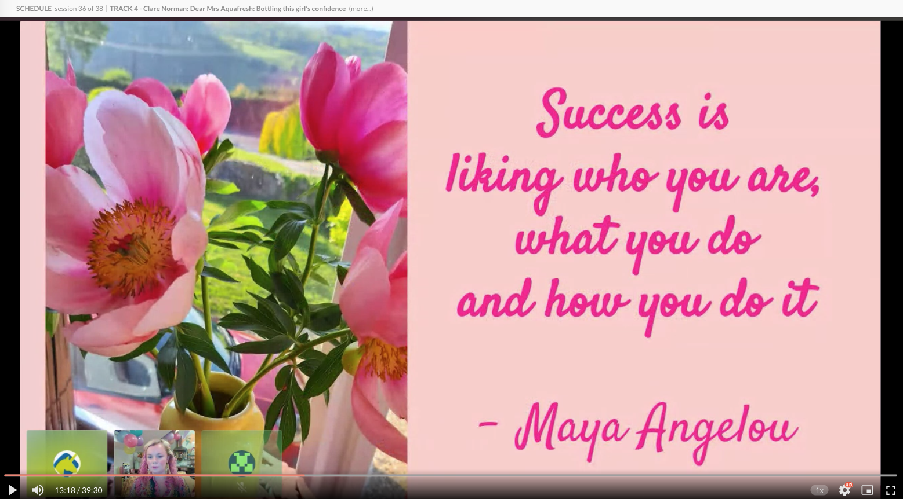

Agile Testing Days 2020
When you say no to what you don't have the energy for, you leave your time, attention, and devotion free to pursue what keeps you energized. Through a tumult of plans and dreams that only 2020 could continue to crush, the Agile Testing Days crew put on a revitalizing conference. I only caught a glimpse of the preparation that went into providing a top-notch experience for speakers and participants, and I have to commend the group on their commitment to the cause. Bravo.
The talks were recorded. I've decided to cut myself off on catching up on missed talks after two weeks. Reflecting on what wisdom I've garned from a small subset of the offerings at Agile Testing Days will be more valuable than being exposed to every last word. In that spirit, let me give you a few takeaways in place of an exhaustive recap or analysis.
Parveen Khan: watch this if you're looking to collaborate
- It is in doing the work that we discover what we must do.
- Don't get stuck when learning something alone; pair.
João Proença: watch this if you need a different direction
- Performing a health check and making a diagnosis are different skills.
- What barriers do we set for ourselves?
- The product is all the pieces the customers see, including the cloud infrastructure (and whatever else your team isn't responsible for).
Paul Holland & Huib Schoots: watch this if your automation isn't providing valuable information
- The sunk cost fallacy means we're unlikely to get rid of automation code, even if it's ineffective.
- We often fail at getting people to change.
Gitte Kligaard talk: watch this if you've been hiding your true self at work
- "I'm just going to rewind." (Possibly my favorite takeaway from this conference, I'm going to use this anytime I trip over my words.)
- Creativity comes when inspired by others.
- Being professional is knowing your craft, and admitting when you don't know.
- Spend time with yourself to listen to yourself.
Alex Schladebeck & Ashley Hunsberger: no recording, but follow these ladies on Twitter for how to balance life and leadership
- Tell people what you want. They may be able to help you.
- Have a clear vision of what you want.
- Write down your fear. Ask yourself: Why is this positive? How can I build the courage to do this?
- Be explicit about what you're doing.
- Show how you're working.
- Build a practice of reflection.
Angie Jones: watch this if you need a push to get into automation
- Determine your goal first. If you don't know it, you'll definitely fail.
- When you're a leader, celebrate the small victories.
- There's no reason to shame people for being creative and doing the best they can.
- It's not realistic to assume master level by default.
- Find out why developers don't participate in automation.
Rob Meaney: watch this if you don't get why observability is important
- We learn profound lessons from painful experiences.
- Build relationships. Influence people at the right time.
- Pain + reflection => progress
- It doesn't matter how much we test a thing if nobody wants to use it.
Tobias Geyer: watch this if you're struggling with an ethical dilemna
- Could ethics be a non-functional requirement?
- Read the codes of ethics proposed by the IEEE, ISTQB, ACM, and James Bach.
- A hippocrattic oath for software testing: avoid harm.
- Promote environment sustainability.
Smita Mishra: watch this if you're interviewing users
- Listen to be able to ask clarifying questions and dig deeper.
- Ask users: their objective, what they found, about the impact, where they're struggling, what could make their lives easier.
Eveline Moolenaars: watch this if you're learning to coach
- "We have a policy; it's somewhere on the internet" isn't enough.
- "Everyone deserves a coach to make them aware of what they've forgotten." ~Brad Gilbert
Federico Toledo: watch this if you or those around you are losing steam
- A tester with a sense of purpose is more resilient.
- Focus on strengths more than weaknesses, turning up the good.
- Provide visibility that you're doing something with the feedback.
- Ask people if they're getting what they need.
Nicola Sedgwick: watch this if you're the gatekeeper for quality
- Do not correlate your own successes with the quality of the entire system.
- Contract-driven work is not holistic quality.
- Report when there has been no progress.
- Ask for a code walk-through before a build is ready.
- Shift quality left all the way to the executive team.
- Testers were hoarding responsibility for quality. Let it go.
Joep Schuurkes: watch this if (or while) you're stuck in an ineffective meeting
- Ask yourself: is my work inside or outside of meetings?
- Get the right group of people in the room before holding a meeting.
- Express specific appreciations for things done well so people will keep doing them.
- Meetings are synchornous collaboration with a purpose.
- Standups should remove impediments.
- The metaphors we choose say something about how we feel about our work.
- Leadership is creating an environment where everyone can contribute to solving a problem. ~Jerry Weinberg
Clare Norman: watch this if you're truly stuck
- Quality is everyone's care.
- "Success is liking who you are, what you do, and how you do it." ~Maya Angelou
- Your courage quota for the day might vary.
- You don't get better by doing the same thing everyday.
- I didn't know how I needed to be helped.
- You can't drag someone through time.
- We live far less in the present than we ought to.
- How magical is it when people value the change that you're making?
- Passion spreads when other people share in your excitement.
- Have a cheerleader in your life.
Clare Norman channeling Maya Angelou on success
Jenny Bramble: watch this if your tests are failing on expected behavior
- Many defects I filed are never fixed. Unfixed defects become expected behavior.
- Automation has never found a defect. Automation tells us behavior has changed.
- Tests should pass on expected behavior, including some defects.
- Document your tests for others, including your future self.
James Lyndsay & Anne Colder: watch this if you feel like an impostor
- Acknowledge when you can't help.
- If you could take one step forward, what would you do?
- Talk to your person, or ask a smaller group of people if they have an answer to your problem.
- Forgiveness is one of the most powerful things you can do as a human being.
- After you make a mistake: wallow in it (really feel it first), forgive yourself, then dance.
- Your job title allows other people to figure out how to work with you.
Gitte Klitgaard AMA: watch this if you miss the hallway track
- Listen to hear what's being said, not to respond.
- We can't read minds.
- Creating a safe space allows you to feel uncomfortable.
- Silence is a tool.
Sophie Küster: watch this if you're ready to tell your colleagues your big secret
- There is strength in showing vulnerability.
- People want to help you. Let them.
- Ask yourself: how am I treating myself?
- Anything worth doing is worth doing poorly. Poorly done is better than not done at all.
Gitte Klitgaard & Morgan Ahlström: watch this if you want to get psychological safety in the boardroom and on the roadmap
- Make time to address psychological safety. Put it on the same level in your team's goals as your product goals.
- We are role models. We lead by example.
- More people were uncomfortable giving than receiving code reviews.
Ard Kramer: watch this if you're getting burned out
- Humans have an unrealitic belief in our own influence.
- Performing your testing role doesn't make you popular.
- Most people looking for confirmation that the software is working. To form a logical proof, we look for evidence that the software doesn't work.
- Ask yourself: which circumstances could I control? Did I manage expectations correctly?
I'm grateful I got to connect with people who keep me going. I'm grateful Agile Testing Days tried to make this work in person. I'm grateful I was able to drop my workshop instead of abaondoning people in breakout rooms to do something they've never done before. I'm grateful the mobbing session I helped organize and facilitate went smoothly. I'm grateful that my job allows me the time and space to be rejunivated by this all. I'm grateful. 🙏